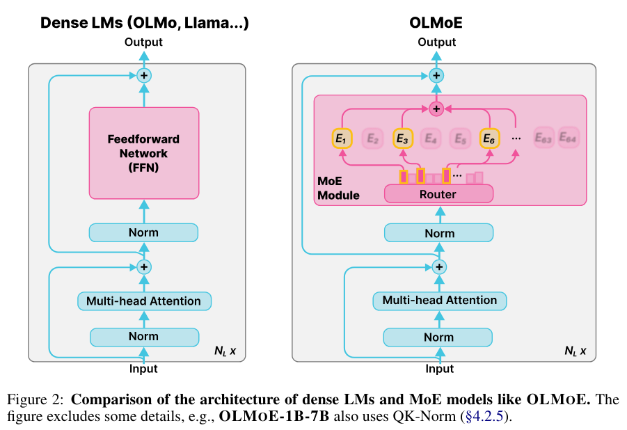
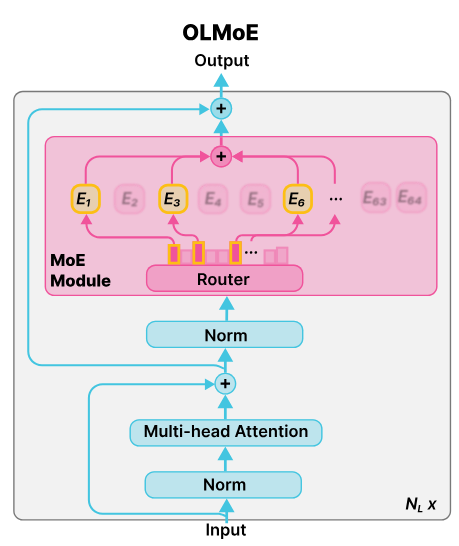

João Fonseca
To what extent do internal signals from Mixture-of-Experts (MoE) models provide reliable uncertainty estimates for hallucination detection?

Dense LMs vs. OLMoE: Router selects top-k experts per token
Question: In which country did the first Winter Olympics take place in 1924?
No evidence provided | Not hallucination
Evidence: The very first Winter Olympics were held in the French ski resort of Chamonix.
Answer: The first Winter Olympics took place in Chamonix, France, in 1924. These Olympic Games were the first international winter sports competitions and marked the beginning of the Winter Olympic Games as we know them today.
Question: Tyler Reddick recently won NASCAR's "Great American Race", held annually in which state?
No evidence provided | Hallucination
Evidence: Reddick won the Daytona 500, held every February in Daytona Beach, Florida. The driver notched a victory for the racing team owned by basketball legend Michael Jordan.
Answer: Tyler Reddick, an American NASCAR driver, won the 2022 NASCAR Cup Series Great American Race, which is held annually in the state of Texas. The race, also known as the Daytona 500, is the season-opening NASCAR race and takes place at the Daytona International Speedway in Dayton.
Question: The current Lunar New Year celebration is marked by which animal in the Chinese zodiac calendar?
Evidence provided | Not hallucination
Evidence: The world rang in the Year of the Horse on February 17 — the first day of the Lunar New Year festivities.
Answer: The current Lunar New Year celebration, also known as the Year of the Horse, is marked by the presence of the horse in the Chinese zodiac calendar. This year, 2026 is the Year of the Horse.
Question: American Edward Eagan is the only person to win a gold medal in both the Summer and Winter Olympics. He won in the four-man bobsled in 1932, but in which sport did he win his Summer gold medal in 1920?
Evidence provided | Hallucination
Evidence: The answer is boxing. Other athletes have competed in both Games, but no one else has won a gold medal in both.
Answer: American Edward Eagan won his Summer Olympic gold medal in 1920, competing in the 1920 Summer Olympics in the 50-meter rifle event. He finished with a score of 1,079 points, earning the gold medal.
(batch, sequence, layers, hidden_size)
# From model internals
hidden_scores = hidden_score(hidden_states)
attention_scores = attention_score(attention_weights)
scores_entropy = topk_entropy(logits)
router_entropy = topk_entropy(expert_weights)
# From expert behavior
expert_hidden_scores = expert_hidden_score(expert_hiddens, weights)
expert_similarities = expert_similarity(expert_hiddens, weights)
expert_usage = count_expert_usage(expert_indices)
| Metric | Description | Shape |
|---|---|---|
hidden_scores |
SVD-based hidden state uncertainty | (B, T, L) |
attention_scores |
Attention weight magnitude & variance | (B, L, H, T) |
scores_entropy |
Entropy over top-k logits | (B, T) |
router_entropy |
Entropy over expert routing weights | (B, T, L) |
expert_hidden_scores |
Weighted expert hidden uncertainty | (B, T, L) |
expert_similarities |
Inter-expert agreement score | (B, T, L) |
expert_usage |
Expert selection frequency | (B, L, E) |
B=batch, T=sequence, L=layers, H=heads, E=num experts
SVD-based uncertainty from hidden state covariance
Given hidden states \(H \in \mathbb{R}^{B \times T \times L \times d}\):
\[ C_{btl} = H_{btl} H_{btl}^T \in \mathbb{R}^{d \times d} \]
\[ \sigma_1, \sigma_2, \ldots, \sigma_d = \text{SVD}(C_{btl}) \]
\[ s_{btl} = \frac{2}{d} \sum_{i=1}^{d} \log(\sigma_i) \]
Higher values indicate more structured/confident representations
Cumulative log-diagonal of attention weights
Given attention weights \(A \in \mathbb{R}^{B \times L \times H \times T \times T}\):
\[ A_{\text{diag}} = \text{diag}(A) \in \mathbb{R}^{B \times L \times H \times T} \]
\[ s_{blht} = \sum_{i=1}^{t} \log(A_{\text{diag}, blhi}) \]
where \(H\)=num attention heads
Output shape: (B, L, H, T)
Shannon entropy over top-k predicted tokens
Given logits \(z \in \mathbb{R}^{V}\):
\[ p = \text{softmax}(z) = \frac{e^{z_i}}{\sum_{j=1}^{V} e^{z_j}} \]
\[ p_{\text{top-k}} = \text{top-k}(p, k) \]
\[ H(p_{\text{top-k}}) = -\sum_{i=1}^{k} p_i \log(p_i) \]
Higher entropy indicates uncertainty in token prediction
Shannon entropy over expert routing weights
Given routing weights \(w \in \mathbb{R}^{E}\) for selected experts:
\[ \bar{w} = \frac{w}{\sum_{i=1}^{k} w_i} \]
\[ H(\bar{w}) = -\sum_{i=1}^{k} \bar{w}_i \log(\bar{w}_i) \]
Higher entropy indicates uncertain expert selection (k=8 for OLMoE)
Weighted combination of per-expert hidden scores
Given expert hidden states \(H_e \in \mathbb{R}^{k \times d}\) and weights \(w\):
\[ s_i = \text{hidden\_score}(H_{e_i}) \quad \text{for } i=1,\ldots,k \]
\[ \bar{w} = \frac{w}{\sum_{j=1}^{k} w_j} \]
\[ s_{\text{expert}} = \sum_{i=1}^{k} \bar{w}_i s_i \]
Aggregates uncertainty across selected experts
Weighted pairwise similarity between expert outputs
Given expert hidden states \(H_e\) and normalized weights \(\bar{w}\):
\[ S_{ij} = \frac{H_{e_i} \cdot H_{e_j}}{\|H_{e_i}\| \|H_{e_j}\|} \]
\[ W = \bar{w} \bar{w}^T \in \mathbb{R}^{k \times k} \]
\[ s_{\text{sim}} = \sum_{i=1}^{k} \sum_{j=1}^{k} W_{ij} S_{ij} = \text{tr}(W^T S) \]
Higher values = experts agree more (lower uncertainty)
Frequency of expert selection across sequence
Given expert indices \(I \in \mathbb{Z}^{B \times T \times L \times k}\):
\[ U_{ble} = \sum_{t=1}^{T} \sum_{j=1}^{k} \mathbb{1}[I_{btlj} = e] \]
\[ U \in \mathbb{Z}^{B \times L \times E} \]
where \(\mathbb{1}[\cdot]\) is indicator function, \(E\)=total experts (64 for OLMoE)
Counts how many times each expert is used per layer, per sample
Traditional NLG metrics for ground truth comparison
Longest Common Subsequence F-score
Given candidate \(X\) and reference \(Y\):
\[ \text{LCS}(X, Y) = \text{longest common subsequence} \]
\[ R_L = \frac{\text{LCS}(X, Y)}{|Y|}, \quad P_L = \frac{\text{LCS}(X, Y)}{|X|} \]
\[ F_L = \frac{(1 + \beta^2) R_L P_L}{R_L + \beta^2 P_L} \]
where \(\beta = 1.2\) (favors recall)
Modified n-gram precision with brevity penalty
Given n-gram precision scores:
\[ p_n = \frac{\sum_{\text{n-gram} \in X} \min(\text{count}_X, \text{count}_Y)}{\sum_{\text{n-gram} \in X} \text{count}_X} \]
\[ BP = \begin{cases} 1 & \text{if } |X| > |Y| \\ e^{1 - |Y|/|X|} & \text{otherwise} \end{cases} \]
\[ \text{BLEU} = BP \cdot \exp\left(\sum_{n=1}^{4} \frac{1}{4} \log p_n\right) \]
\(X\)=candidate, \(Y\)=reference
Youden's J statistic for ROC-optimal threshold
Given ROC curve with true positive rate (TPR) and false positive rate (FPR):
\[ J(\tau) = \text{TPR}(\tau) - \text{FPR}(\tau) \]
\[ \tau^* = \arg\max_{\tau} J(\tau) \]
Equivalently maximizes balanced accuracy:
\[ \text{Accuracy}(\tau) = \frac{\text{TPR}(\tau) + \text{TNR}(\tau)}{2} \]
where TNR = 1 - FPR (true negative rate)
weak_score = (
evidence_flag +
sum(metric_flags) / num_metrics
) / 2
label_token_hallucination_mask: Binary mask per tokenlabel_token_hallucination_ratio: Proportion hallucinatedOptimized approach: N API calls (50% reduction)
{"label": bool, "hallucinated_spans": [...]}
moeuncert/
├── datasets.py # RealtimeQA loading
├── forwards/ # Custom forward passes
├── monitoring/ # LLMMonitor wrapper
├── metrics/ # Uncertainty metrics
├── experiments/ # Shared utilities
│ ├── paths.py # Path resolution
│ └── utils.py # Optimal thresholds
└── utils.py # Generation helpers
python experiments/1.0-generate-answers.py \
--model allenai/OLMoE-1B-7B-0924-Instruct \
--years 2026 --month 2
Outputs:
results.parquet: Answers + metricsbase_generation/*.pt: Model internals (no evidence)evidence_generation/*.pt: Model internals (with evidence)
python experiments/1.1-analyze-metrics.py \
--model allenai/OLMoE-1B-7B-0924-Instruct \
--years 2026 --month 2
Outputs (in figures/):
metrics_violin_plot.png: Distribution comparisonsroc_curves.png: ROC curves per metric + combinedconfusion_matrices.png: Performance at optimal thresholds
python experiments/2.0-make-labels.py \
--model allenai/OLMoE-1B-7B-0924-Instruct \
--years 2026 --month 2 \
--ollama-model gemma3-1b \
--max-llm-answer-samples 100
Outputs:
results_labeled_{ollama_model}.parquet: With hallucination labels